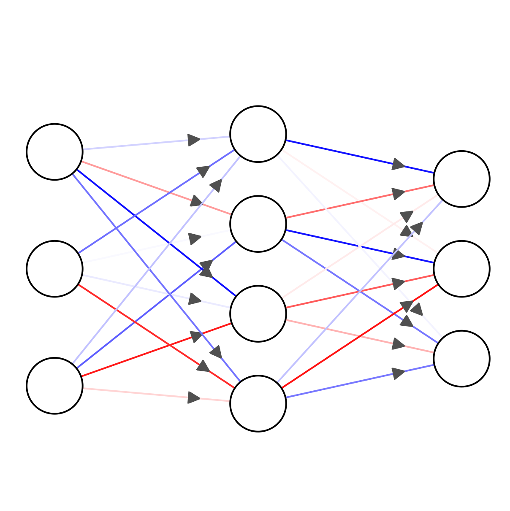
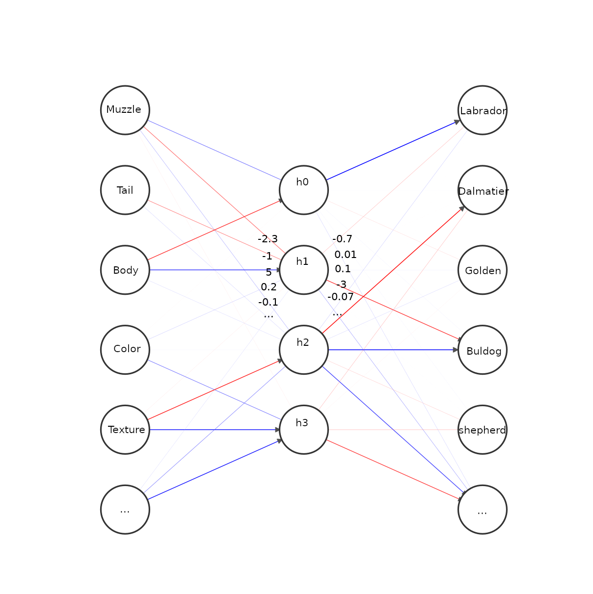
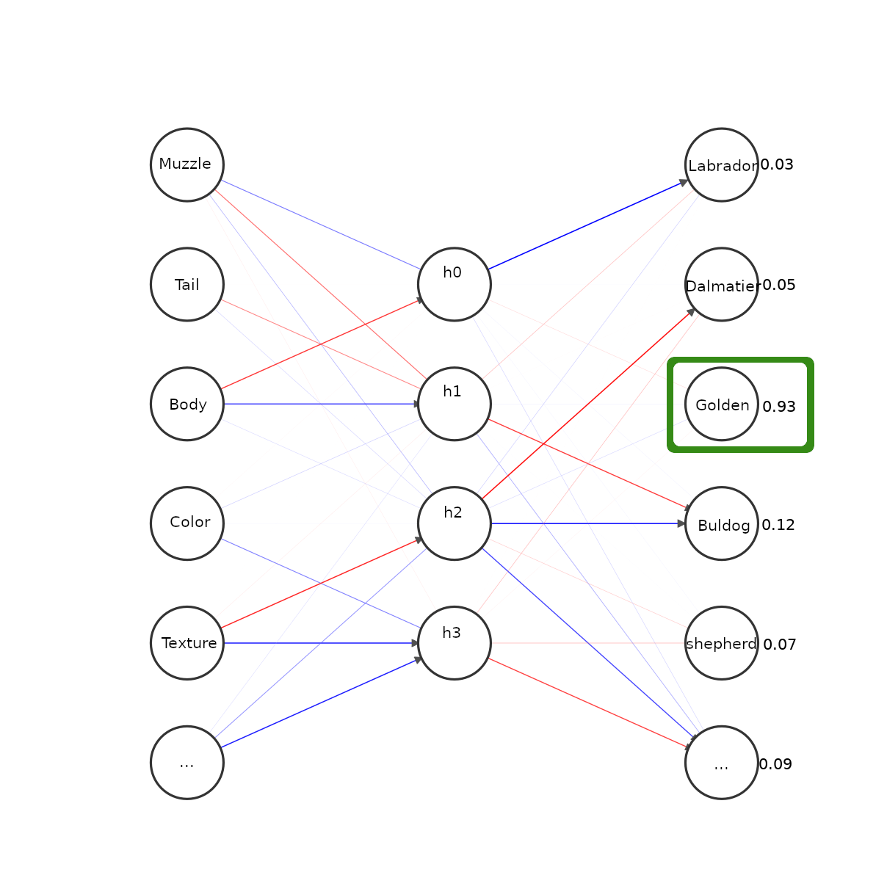
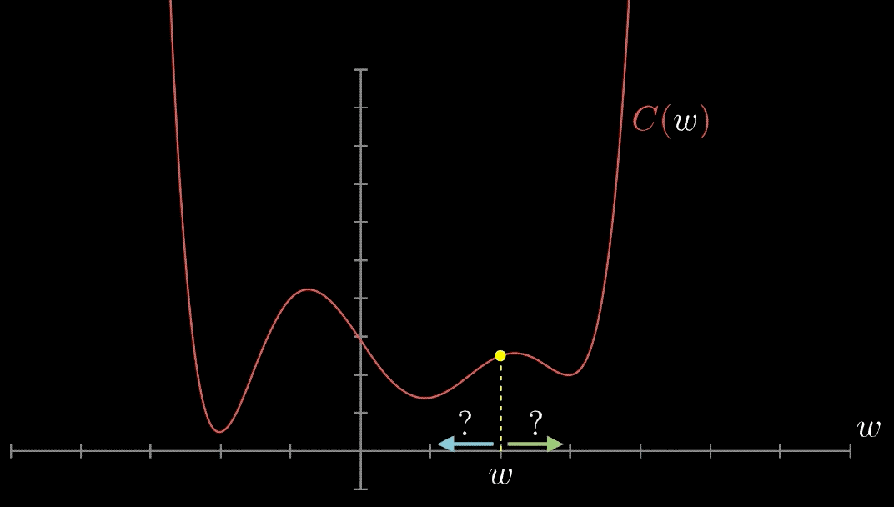

Neural Networks
Roeland Matthijssens
Content
- structure of a NN
- Usage
- Inner workings
- Training
Disclaimer
There's a bunch of numerical magic that i'm glossing over.
For more details check out
Structure
Usage
Problem: Dog breed classification
Data
DogsToClassify = [
{
MuzzleLength: "10cm",
TailLength: "20cm",
BodySize: "70cm",
CoatColor: "Black",
CoatTexture: "Straight",
...
}, {
MuzzleLength: "7cm",
TailLength: "10cm",
BodySize: "30cm",
CoatColor: "White",
CoatTexture: "Curly",
...
},
...
]Normalize Data
DogsToClassify = [
{
MuzzleLength: 100,
TailLength: 200,
BodySize: 700,
CoatColor: 0,
CoatTexture: 0,
...
}, {
MuzzleLength: 70,
TailLength: 100,
BodySize: 300,
CoatColor: 2,
CoatTexture: 1,
...
},
...
]
CoatTextures = ["Straight", "Curly", ...]
CoatColors = ["Black", "Brown", "White", ...]Prepare Data
Inputs = [
[100, 200, 700, 0, 0],
[70, 100, 300, 2, 1],
...
]Making a guess
Reading the output
Outputs = [
[0.03, 0.61, 0.16, 0.05, 0.05],
[0.07, 0.05, 0.07, 0.01, 0.67],
...
]- The first dog is a dalmatian with a 61% confidence
- The Second dog is a Shepherd with a 67% confidence
Inner workings
Weights
Biasses
Activation function
- Map weighted sum to a more manageble value
- Many different function
- Each has their own purpose, benefits and drawbacks
Feed forwards
- Provide input
- Multiply weights
- Add biasses
- Run through activation function
- Repeat for each layer
- Read output
Provide Input
Multiply weights
Add biasses

Apply activation function
Repeat for each subsequent layer
Read output
Training
Goal
Turn dials and nobs in the neural network to better predict the training data
- weights
- biasses
Backpropagation
- Calculate average output errors
- Adjust weights for nodes
- Propagate errors to previous layer
- Repeat for all layers
Calculate average error
for each data in training_data do
feed forward with input
calculate difference between expected and actual
add error to running total
end
average running total errorAdjust weights
for node in the output layer
adjust weight for each node in the previous layer based on error
endPropagate errors to previous layer
for node in the output layer
for previous_node in previous layer nodes
get error share for previous node based on weights
add error to previous node
end
endRepeat for all layers
Gradient descent
backpropagation is a very high demensional gradient descent
Future topics
- Overfitting
- Momentum
- Optimizers
- Learning rate
- Stochastic Gradient Descent
- Recurrent NN
- ...